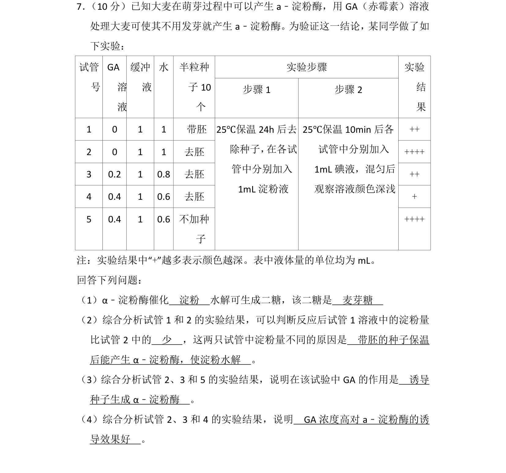
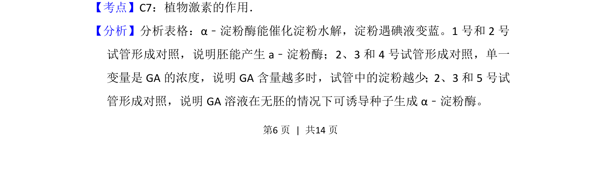
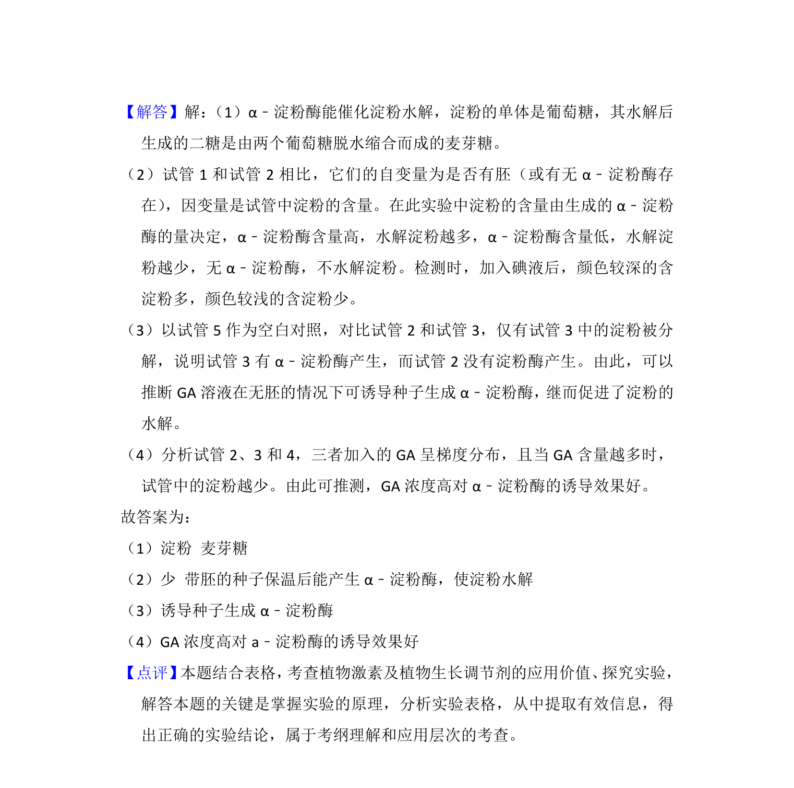

考点：植物激素 赤霉素 α-淀粉酶 对照实验

验证赤霉素诱导大麦种子产生α-淀粉酶的实验分析


📄 原 PDF 第 6 页：
素材/真题/吉林/2008-2024·（吉林）生物高考真题/2013年高考生物试卷（新课标Ⅱ）（解析卷）.pdf
7． （10分）已知大麦在萌芽过程中可以产生a﹣淀粉酶，用GA（赤霉素）溶液 处理大麦可使其不用发芽就产生a﹣淀粉酶。为验证这一结论，某同学做了如 下实验： 实验步骤试管 号 GA 溶 液 缓冲 液 水 半粒种 子10 个 步骤1 步骤2 实验 结 果 1 0 1 1 带胚 ++ 2 0 1 1 去胚 ++++ 3 0.2 1 0.8 去胚 ++ 4 0.4 1 0.6 去胚 + 5 0.4 1 0.6 不加种 子 25℃保温24h后去 除种子， 在各试 管中分别加入 1mL淀粉液 25℃保温10min后各 试管中分别加入 1mL碘液，混匀后 观察溶液颜色深浅 ++++ 注：实验结果中“+”越多表示颜色越深。表中液体量的单位均为mL。 回答下列问题： （1）α﹣淀粉酶催化 淀粉 水解可生成二糖，该二糖是 麦芽糖 （2）综合分析试管1和2的实验结果，可以判断反应后试管1溶液中的淀粉量 比试管2中的 少 ，这两只试管中淀粉量不同的原因是 带胚的种子保温 后能产生α﹣淀粉酶，使淀粉水解 。 （3）综合分析试管2、3和5的实验结果，说明在该试验中GA的作用是 诱导 种子生成α﹣淀粉酶 。 （4）综合分析试管2、3和4的实验结果，说明 GA浓度高对a﹣淀粉酶的诱 导效果好 。
【考点】C7：植物激素的作用．菁优网版权所有 【分析】分析表格：α﹣淀粉酶能催化淀粉水解，淀粉遇碘液变蓝。1号和2号 试管形成对照，说明胚能产生a﹣淀粉酶；2、3和4号试管形成对照，单一 变量是GA的浓度，说明GA含量越多时，试管中的淀粉越少；2、3和5号试 管形成对照，说明GA溶液在无胚的情况下可诱导种子生成α﹣淀粉酶。